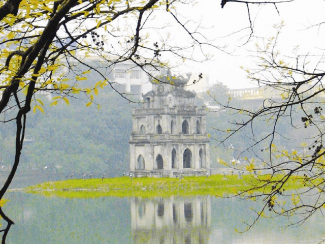
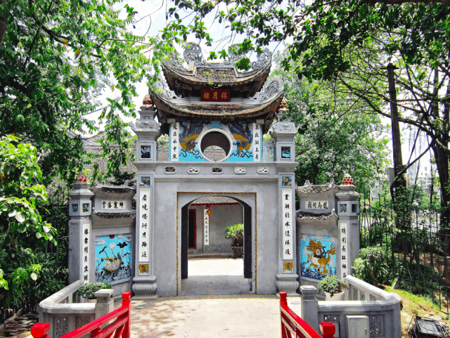
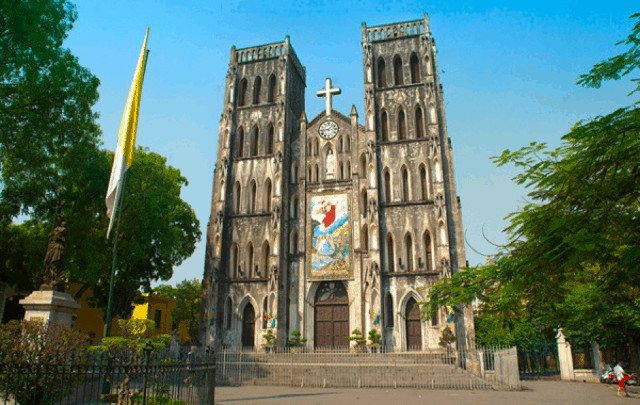
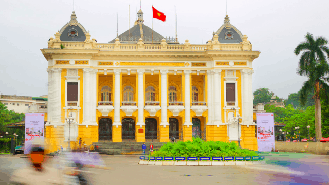
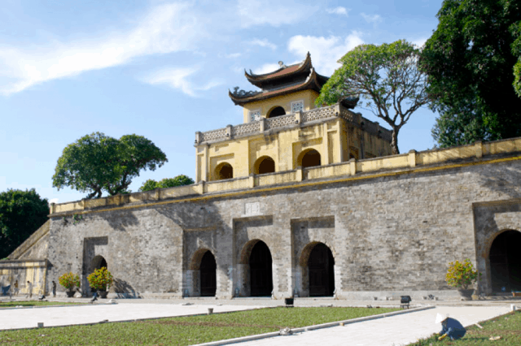
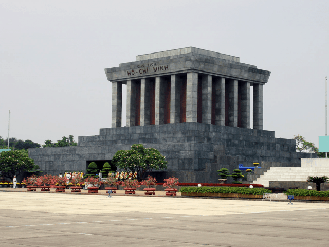

Đứng đầu trong danh sách những danh lam thắng cảnh không thể bỏ qua khi du lịch Hà Nội chính là Hồ Hoàn Kiếm. Hồ nằm ở vị trí trung tâm của thành phố và được ví như “trái tim” của thủ đô. Hồ Hoàn Kiếm còn có tên gọi khác là Hồ Gươm bởi nó gắn liền với sự tích trả gươm thần huyền thoại của vua Lê Lợi cho Rùa Vàng. Mặt hồ xanh màu rêu cổ kính như một tấm gương khổng lồ soi bóng những cây cổ thụ cành lá sum suê, những rặng liễu rủ thướt tha cùng toà nhà Bưu điện và dãy nhà cao tầng xung quanh vươn lên giữa trời xanh.
Cầu Thê Húc màu đỏ son, cong cong dẫn vào đền Ngọc Sơn ẩn sau những bóng đa cổ thụ. Đền được xây dựng vào thế kỉ 19 và là công trình điển hình về không gian và tạo tác kiến trúc. Với sự kết hợp hài hoà giữa đền và hồ, Đền Ngọc Sơn cùng với Hồ Hoàn Kiếm đã tạo nên một tổng thể kiến trúc Thiên – Nhân hợp nhất, mang lại một không gian chan hoà giữa thiên nhiên và con người.
Cũng nằm trong khu vực Phố cổ thuộc quận Hoàn Kiếm, Nhà thờ Lớn Hà Nội (hay được gọi là Nhà thờ Chính toà Hà Nội) là một nhà thờ cổ với kiến trúc Gothic Châu Âu tiêu biểu. Không chỉ là một nơi sinh hoạt tín ngưỡng, nhà thờ Lớn với kiến trúc đặc sắc còn thu hút nhiều du khách đến thăm quan và chiêm ngưỡng. Đến đây, bạn sẽ có cảm giác như đang đứng trong một lâu đài cổ kính rộng lớn được chạm trổ những hoa văn gỗ sơn son thiếp vàng cùng hệ thống tranh trên kính màu rực rỡ.
Toạ lạc giữa ngã tư phố Tràng Tiền và Ngô Quyền, Nhà hát Lớn Hà Nội được xây dựng vào những năm đầu của thế kỉ 20 và từ đó đến nay vẫn luôn là một công trình kiến trúc và văn hoá bậc nhất của thủ đô. Được thiết kế theo phong cách cổ điển Pháp với nhiều đường nét và màu sắc giống với các nhà hát ở châu Âu, Nhà hát Lớn đã trở thành một trung tâm văn hoá diễn ra nhiều sự kiện và hoạt động biểu diễn nghệ thuật sân khấu lớn ở Việt Nam. Bạn hãy đến đây và đi dọc quanh khu sân trước cửa nhà hát để chiêm ngưỡng trọn vẹn mọi góc của toà kiến trúc to lớn này.
Nằm trên con đường Hoàng Diệu, Hoàng thành Thăng Long là một di sản văn hoá thế giới gắn liền với lịch sử của kinh thành Thăng Long – Hà Nội dưới thời các triều đại Lý, Trần, Lê và triều Nguyễn. Đây là một công trình kiến trúc đồ sộ và mang nhiều giá trị lịch sử và khảo cổ học quan trọng. Trong những công trình cổ bên trong Hoàng Thành, nổi bật nhất là di tích Cột cờ Hà Nội (hay còn được gọi là Kỳ Đài Hà Nội) gắn liền với nhiều sự kiện lịch sử của dân tộc. Khi Cách mạng tháng Tám thành công, lần đầu tiên lá cờ đỏ sao vàng trên Cột cờ Hà Nội tung bay phấp phới giữa bầu trời thủ đô.
Lăng Bác nằm ngay bên Quảng trường Ba Đình lịch sử, nơi Chủ tịch Hồ Chí Minh đọc bản Tuyên ngôn độc lập ra đời nước Cộng hoà xã hội chủ nghĩa Việt Nam. Nơi an nghỉ vĩnh hằng của vị lãnh tụ vĩ đại của dân tộc được bao phủ trong không gian cây vườn bốn mùa xanh tươi toả bóng mát.
